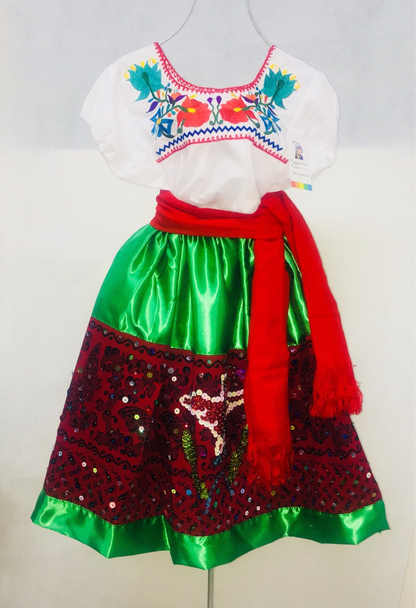
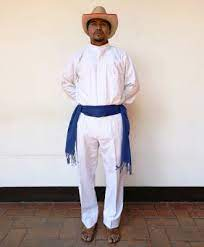

La vestimenta de la mujer consiste de una falda de paño rojo, línea "A" por
enfrente, pues atrás tiene tablones. En la parte baja de la falda hay una franja
con flores bordadas. De la falda sobresale un fondo de encaje color blanco.
La blusa, blanca y de brocado francés, tiene un cuello alto, tipo virreinal; manga
bombacha, excepto del codo a la canilla, botonadura y es entallada hasta la cintura
de donde cae un faldón plisado de la misma tela.

El traje típico del hombre consiste en un pantalón beige, pueden ser otros colores,
camisa blanca de cuello alto con bordados en el pectoral y puños terminados en olán.
Se acompaña de una chaqueta roja de manga tres cuartos, abierta y adornada con
botones.
